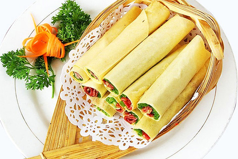
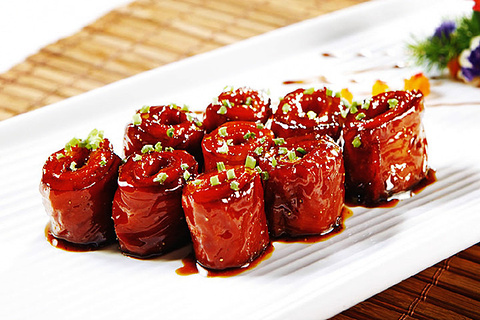
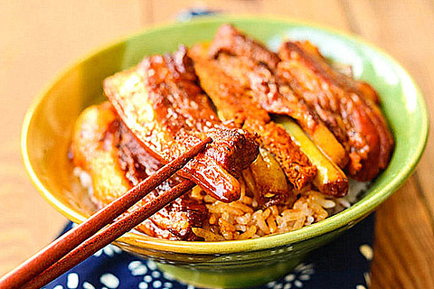
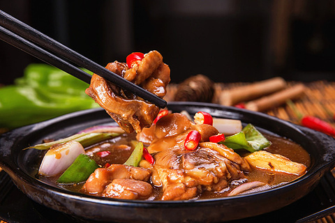
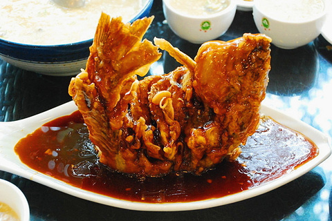

糖酥煎饼

上世纪三十年代初，一位王姓商人开设了德顺斋煎饼铺，八十多年来，一直是济南人馈赠外地有人的佳礼。这种煎饼十分酥脆，而且能够久存。
九转大肠

九转大肠是清光绪年间的九华楼首创，
九转大肠的作法是把猪大肠(直肠)经洗刷后，加香料用开水煮至硬酥，取出切段，加酱油、糖、香料等调味，就制成了香肥可口的九转大肠。其实九转大肠一点也不带弯的。此菜是清朝光绪初年，济南九华林酒楼店主首创，开始名为"红烧大肠"，后改名为"九转大肠"。据说当初店主宴请客人的时候，客人尝过此菜赞不绝口，称可与九转仙丹媲美，同时为取悦店家喜"九"之癖，并称赞厨师精工细作，才将其更名为"九转大肠"。
这道菜不仅外观色泽红润光亮，口味肥而不腻，而且调味中使用名贵中药，药膳价值很高。
把子肉

济南把子肉是中华名小吃之一，是下饭的上品。名字结缘于三国时期刘关张三兄弟结拜后吃的一顿炖猪肉，后来隋唐时期，鲁地的一位名厨将做法改善，把子肉得以名声大噪；现在的把子肉是选用优良带皮猪肉，放在调有酱油八角的高筒瓦罐中炖熟，火候极佳的把子肉肥而不腻，选肉肥瘦相间，切片薄约半厘米厚，炖至有型而未烂之时，待上色至暗红，盖到米饭上，再将炖肉的浓汁一举浇入。色泽红润鲜亮，醇香四溢，十分值得品尝。
黄焖鸡米饭

黄焖鸡做菜常见，但黄焖鸡和米饭放在一块就是济南天桥区的餐厅发明的了。做这道菜，一定要选用三黄鸡的鸡腿肉，肉质分层，弹而不肥。而且用土制的砂锅煮炖，才是最地道的。
糖醋鲤鱼

糖醋鲤鱼是济南的传统名菜，产于黄河的鲤鱼肉质鲜美肥嫩，且营养丰富。在制法上，先把鱼肉经油炸，然后浇上由老醋和糖调制成的糖醋汁，外焦里嫩，酸甜可口，百吃不腻。